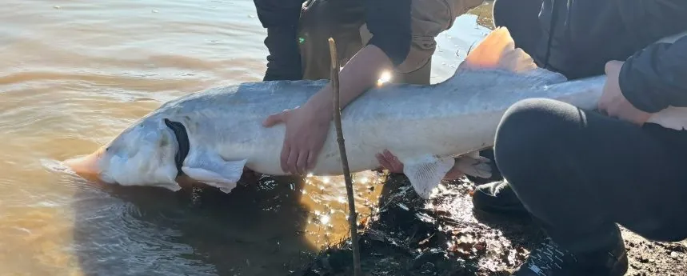

鱼类 · 动物界
欧洲鳇 Huso huso

欧洲最大的淡水鱼之一，体长可超过 7 m，所产的鱼子酱被誉为“黑色黄金”，因过度捕捞和栖息地破坏被列为极危。
- 分类
- 门脊索动物门纲硬骨鱼纲目鲟形目科鲟科属鳇属
- 栖息环境
- 里海、黑海和亚速海及其入海河流，成鱼在海洋育肥，溯河产卵
- 地理分布
- 里海、黑海、亚速海及伏尔加河、乌拉尔河、多瑙河等河流，中国无自然分布
- 保护级别
- IUCN 极危（CR）；列入 CITES 附录Ⅱ
物种志
欧洲鳇体呈粗壮的纺锤形，吻短而钝，口大、位于头部腹面，口裂呈新月形，没有牙齿。体表排列着五道骨板，背骨板较小，尾鳍为歪形尾。成鱼体长一般 3–5 m，体重 200–600 kg，最大记录体长超过 7 m、体重超过 1 t，是欧洲体型最大的淡水鱼类之一。体色背部灰黑或蓝灰，腹部灰白，吻部颜色较浅。
欧洲鳇是里海、黑海和亚速海的洄游性鱼类，成熟个体溯伏尔加河、乌拉尔河、多瑙河等河流产卵，幼鱼顺流下海育肥。它是肉食性动物，捕食鱼类、软体动物和甲壳类，甚至会捕食水鸟和小型哺乳动物。欧洲鳇性成熟极晚，雄性约 10–15 年、雌性需 15–20 年才第一次繁殖，寿命可达 100 年以上，因此种群一旦衰退就极难恢复。它的鱼卵可制成世界顶级鱼子酱，长期的高价需求导致野生种群被严重过度捕捞，加上水坝阻断洄游通道，IUCN 将其评为极危，全部鲟形目物种的国际贸易也受到 CITES 附录Ⅱ管制。
形态与习性
- 食性肉食性，捕食鱼类、软体动物、甲壳类，也捕食水鸟
- 体长一般 3–5 m，最大记录超过 7 m
- 体重常见 200–600 kg，最大可超过 1 t
- 寿命可达 100 年以上
- 繁殖雄性 10–15 龄、雌性 15–20 龄性成熟，溯河产卵
- 经济价值鱼卵可制成顶级鱼子酱，价格极为昂贵
趣味知识
- 欧洲鳇是欧洲最大的淡水鱼，最大记录体长超过 7 m，体重超过 1 t。
- 它的性成熟极晚，雌鱼可能要 15–20 年才第一次产卵，因此种群恢复非常缓慢。
- 欧洲鳇的鱼子酱被称为“黑色黄金”，旺盛的需求曾导致野生种群崩溃。